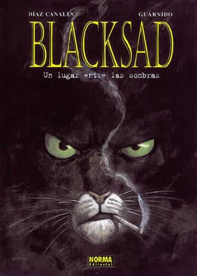
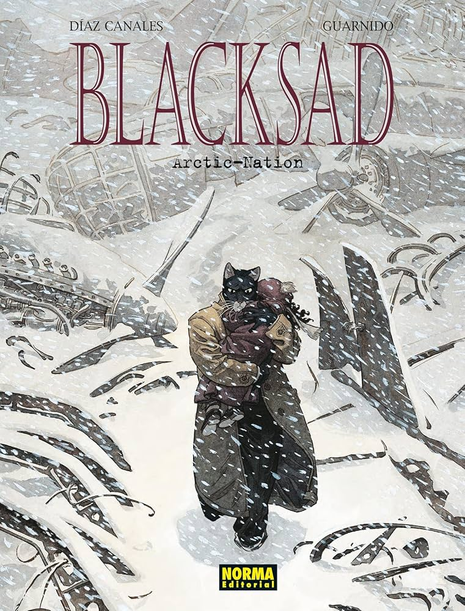
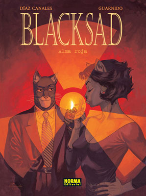
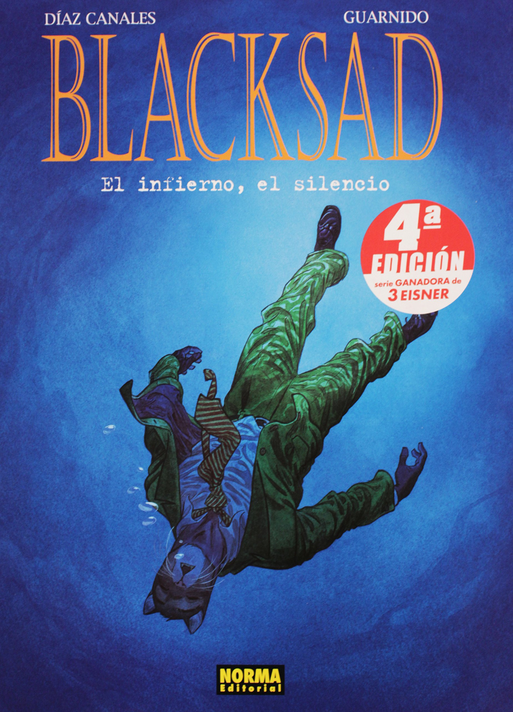
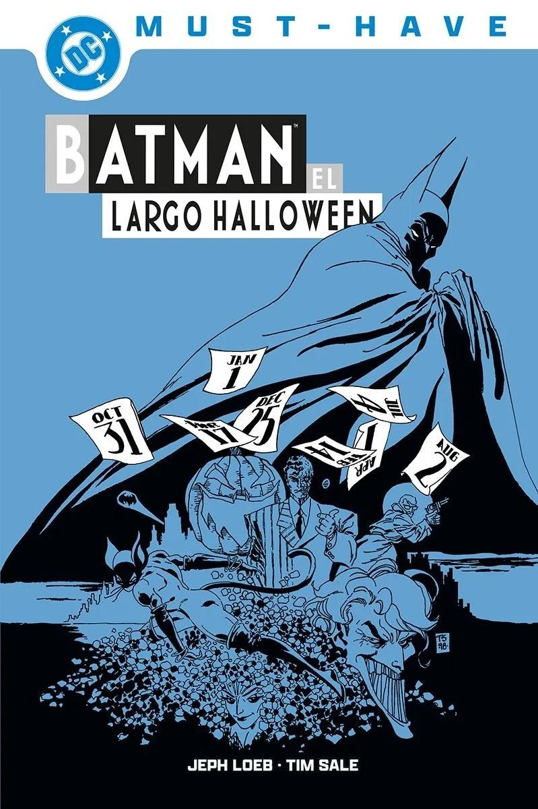
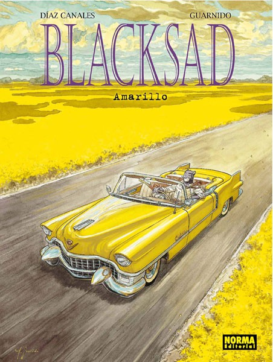
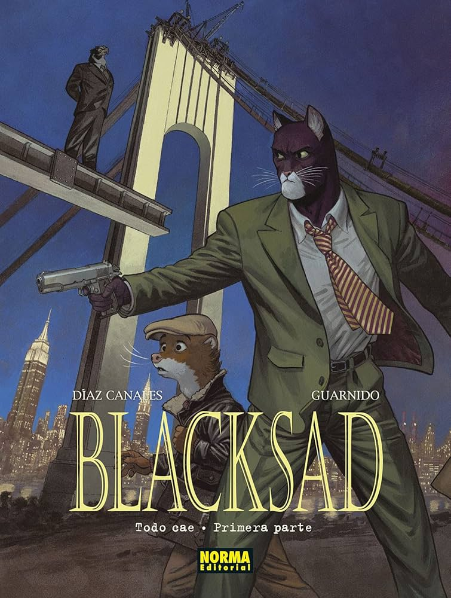
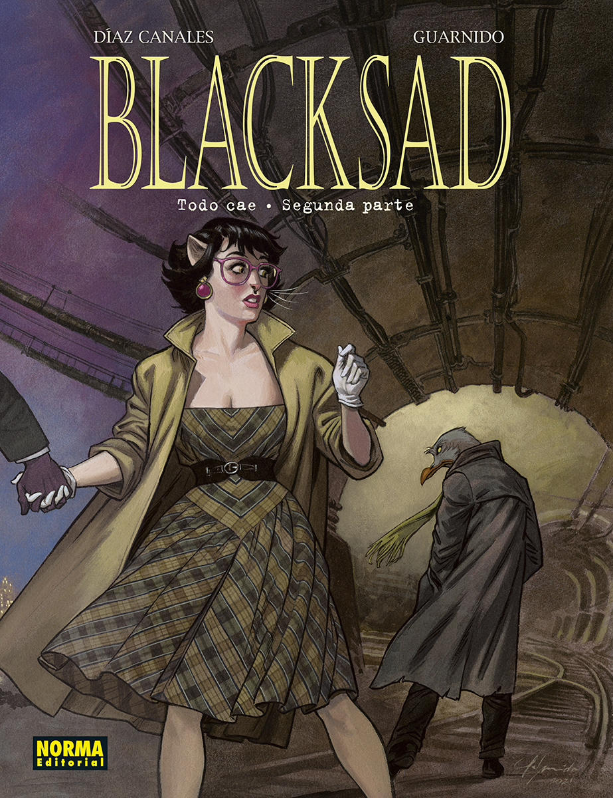

FINALIZADOS
| Título | Autor | Año publicación | Portada | Resumen |
|---|---|---|---|---|
| Watchmen | Guionista Alan Moore, dibujante Dave Gibbons y entintador John Higgins. | 1986 | |
Asesinan al Comediante y Rorschach investiga el crimen. El buho nocturno y espectro de seda se lian y Dr. Manhattan recibe una trampa. Tras mucho investigar, Rorschach y Buho nocturno descubren que el hombre más inteligente de la tierra (Adrian Veidt, Ozymandias) es el que está detrás de todo. Su objetivo es la paz mundial a través de exterminar a media Nueva York. Ozymandias es el asesino del Comediante. |
| Batman El tribunal de los búhos | Guionista Scott Snyder, dibujante Greg Capullo | 2012 | |
Hay un asesinato en Gotham y Batman trata de resolverlo. Aparece un asesino llamado "La Garra" perteneciente al tribunal de los búhos, una antigua sociedad secreta de la ciudad. La Garra dice ser Thomas Wayne Jr. hermano de Bruce Wayne que fue dado en adopción cuando nació. Batman lo derrota. |
| Blacksad 1. Un lugar entre las sombras. | Guión Juan Diaz Canales - Ilustrador Juanjo Guarnido. | 2000 |  | John Blacksad es un gato detective que investiga el asesinato de una actriz la cual fue su exnovia. El asesino resulta ser un rico empresario al que la policia no se atrevia a tocar. |
| Blacksad 2. Arctic Nation. | Guión Juan Diaz Canales - Ilustrador Juanjo Guarnido. | 2003 |  | John Blacksad investiga la desaparición de una niña en un barrio dominado por los racistas blancos. |
| Blacksad 3. Alma Roja. | Guión Juan Diaz Canales - Ilustrador Juanjo Guarnido. | 2005 |  | John Blacksad, detective privado reciclado en guardaespaldas, se verá metido en esta ocasión en una intriga política de alcance internacional cuando reencuentre a un antiguo profesor, ahora toda una eminencia en energía atómica, y a su ayudante, la bella escritora Alma Mayer |
| Blacksad 4. El infierno, el silencio. | Guión Juan Diaz Canales - Ilustrador Juanjo Guarnido. | 2010 |  | En esta ocasión la acción se traslada a Nueva Orleans, donde Blacksad tendrá que encontrar al músico Sebastian “Little hand” Fletcher en menos de un día, pero lo que no sabe es que la ciudad más musical de los EE UU esconde más misterios que un pianista perdido… |
| Batman. El largo halloween. | Guión Jeph Loeb - Ilustrador Tim Sale. | 1997 |  | Un misterioso asesino, apodado "Festivo", que comete un asesinato en cada día festivo del año, lo que obliga a Batman, el Comisario Gordon y al Fiscal Harvey Dent a unirse para detenerlo. La trama, que se desarrolla a lo largo de un año en los primeros años de Batman, también aborda la guerra entre las familias mafiosas Falcone y Maroni, mientras los héroes intentan desentrañar la identidad del asesino y el origen del crimen en Gotham. El asesino resulta ser Alberto Falcone hijo de Carmine Falcone. Harvey Dent enloquece y se convierte en Dos Caras. Su mujer también confiesa asesinar al final para intentar complacerle. |
| Blacksad 5. Amarillo. | Guión Juan Diaz Canales - Ilustrador Juanjo Guarnido. | 2013 |  | John Blacksad está cansado de tanta violencia y miseria a su alrededor, así que decide tomarse su tiempo antes de volver a casa. La suerte parece sonreírle cuando un desconocido le contrata para llevar su coche, un flamante Cadillac modelo Eldorado, desde Nueva Orleans hasta Tulsa. Pero las carreteras del sur son tan polvorientas como imprevisibles y sin quererlo, se verá obligado a atravesar los Estados Unidos de punta a punta para resolver un asesinato. Una apasionante aventura por la que desfilarán moteros, abogados, escritores malditos y hasta artistas de circo. |
| Blacksad 6. Todo cae. Primera parte. | Guión Juan Diaz Canales - Ilustrador Juanjo Guarnido. | 2021 |  | Blacksad recibe el encargo de proteger al líder del sindicato de trabajadores del metro, amenazado por la mafia de las comadrejas. |
| Blacksad 7. Todo cae. Segunda parte. | Guión Juan Diaz Canales - Ilustrador Juanjo Guarnido. | 2023 |  | El regreso de Alma Ithaquaer ha puesto patas arriba la vida de John Blacksad, reviviendo un amor que este creía olvidado. Además, Alma está relacionada con el asesinato de Iris Allen, del que Weekly es el principal sospechoso. |